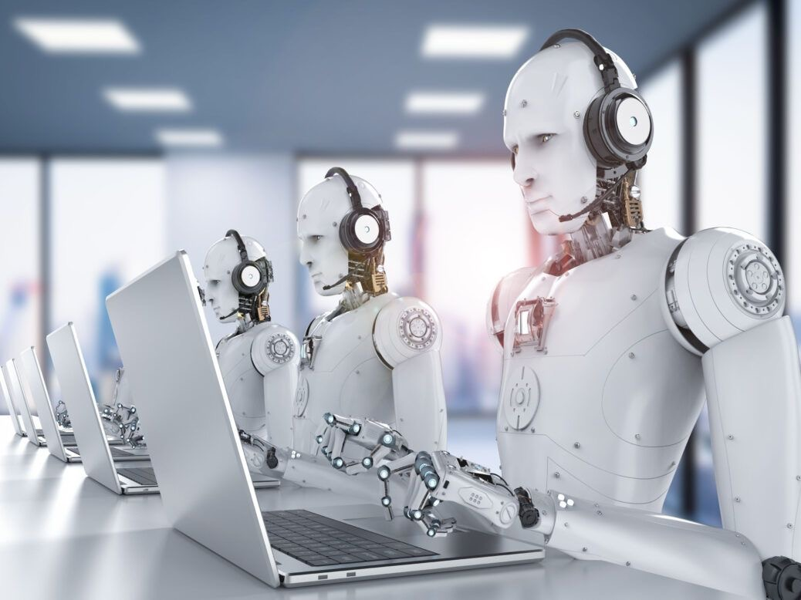

Saatnya Revolusi Digital! Bagaimana AI & ERP Mengubah Cara Bisnis Bekerja
Dipublikasikan pada 31 Januari 2025 by Ema Kharisma
Dalam era digital yang terus berkembang, bisnis dituntut untuk lebih cepat, efisien, dan inovatif. Salah satu faktor utama yang mendorong transformasi ini adalah kombinasi antara Artificial Intelligence (AI) dan Enterprise Resource Planning (ERP). Dengan semakin canggihnya teknologi, perusahaan tidak lagi hanya mengandalkan proses manual atau sistem terpisah, tetapi beralih ke solusi terpadu yang mengoptimalkan setiap aspek operasional. Alphasoft memahami bahwa untuk tetap kompetitif, bisnis harus mengadopsi teknologi yang mampu meningkatkan produktivitas dan efisiensi. Oleh karena itu, kami menghadirkan solusi ERP berbasis AI yang dirancang untuk membantu bisnis dalam menghadapi tantangan masa depan.
AI & ERP: Kombinasi Cerdas untuk Bisnis Modern
ERP (Enterprise Resource Planning) telah menjadi sistem vital dalam operasional perusahaan dengan mengintegrasikan berbagai fungsi bisnis seperti keuangan, sumber daya manusia, produksi, dan logistik ke dalam satu platform. Kehadiran teknologi AI (Artificial Intelligence) semakin memperkuat sistem ERP, menjadikannya lebih cerdas dan adaptif terhadap kebutuhan bisnis modern.
Integrasi AI memungkinkan analisis data secara real-time, memberikan wawasan mendalam tentang tren pasar, serta membantu pengambilan keputusan strategis dalam hitungan detik. Dengan analitik prediktif, perusahaan dapat mengantisipasi permintaan pelanggan, mengoptimalkan persediaan, dan meningkatkan efisiensi rantai pasok.
Selain itu, AI menghadirkan otomatisasi pada proses bisnis yang repetitif seperti pemrosesan pesanan, pencatatan transaksi, dan manajemen inventaris. Otomatisasi ini tidak hanya mempercepat proses kerja, tetapi juga meminimalisir kesalahan manusia, sehingga meningkatkan produktivitas dan akurasi.
Dalam aspek layanan pelanggan, chatbot berbasis AI dan sistem CRM (Customer Relationship Management) yang terintegrasi membantu memberikan respons cepat, personalisasi layanan, serta rekomendasi produk yang relevan berdasarkan analisis preferensi pelanggan.
Keamanan data juga menjadi perhatian utama dalam sistem ERP berbasis AI. Dengan machine learning, sistem dapat mengenali pola aktivitas mencurigakan, mendeteksi ancaman siber, dan mencegah kebocoran data sebelum terjadi. Kombinasi teknologi AI dan ERP menjadi solusi cerdas yang mendukung perusahaan dalam menghemat waktu, menekan biaya operasional, meningkatkan efisiensi, dan mendorong inovasi bisnis.
Di Alphasoft, kami menyediakan solusi ERP yang fleksibel dan dapat disesuaikan dengan kebutuhan bisnis Anda. Dengan pengalaman dalam pengembangan sistem digital, kami siap membantu perusahaan Anda mencapai efisiensi operasional maksimal dan bersaing di era digital.